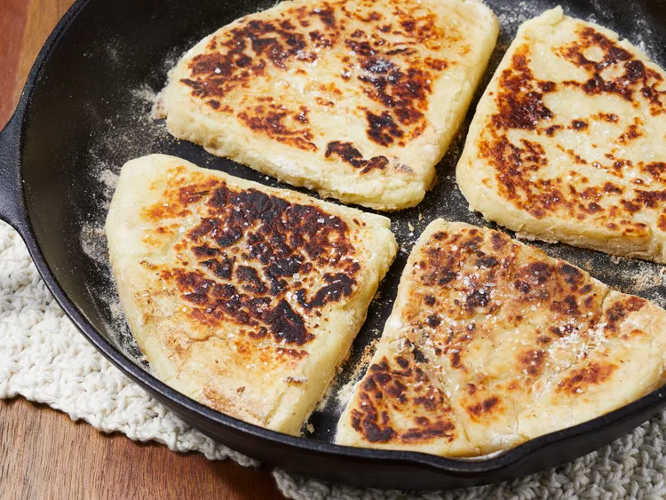

Irish Potato Farls

Ingredients
- 400g cold mash potatoes
- 1/4 cup plain flour
- Salt
Stages
- Recipe is best using leftover mash, otherwise peel, chop and cook 400g potatoes, then mash and leave until cool enough to handle
- Mix potatoes and plain flour in a bowl, then knead until smooth
- Divide the mixture into four even balls, then roll one into a circle on a lightly dusted surface. Cut into four triangles.
- Cook in a hot pan for 1-2 minutes per side, until lightly golden and crusted
- To finish, fry the cooked farl in butter and serve